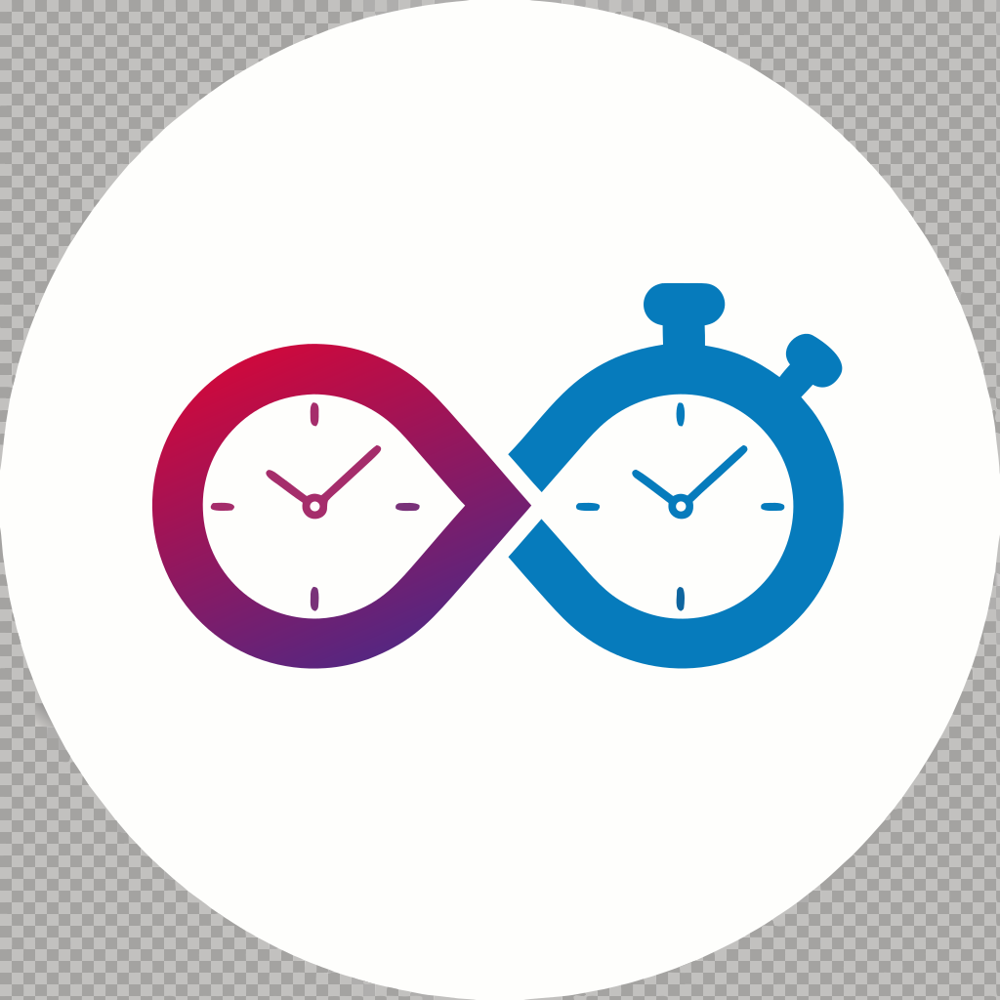
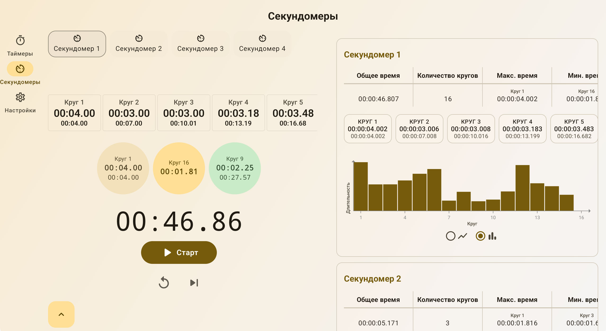
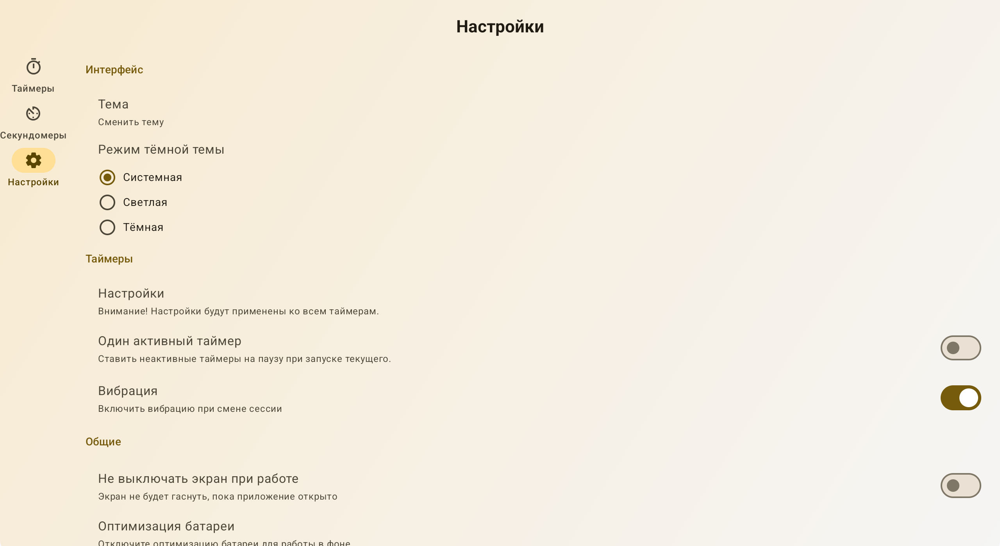

TimeMeasurer
Инструмент для измерения и анализа времени.
О приложении
TimeMeasurer помогает измерять и анализировать время: секундомеры, таймеры и статистика по сессиям собраны в одном месте. Приложение работает на Android, iOS и в браузере из единой кодовой базы Kotlin Multiplatform.
Создавайте несколько таймеров и секундомеров, отслеживайте историю запусков, настраивайте звуковые сигналы и смотрите наглядную статистику по кругам и сессиям. Все данные хранятся локально на устройстве.
Скриншоты




Видео
Видео скоро